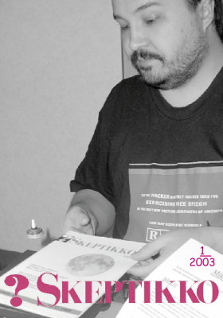
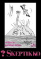
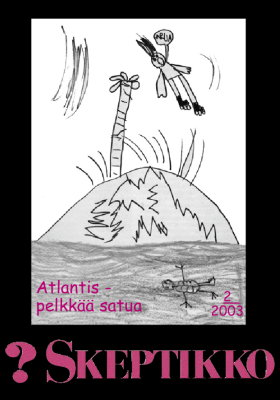
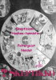
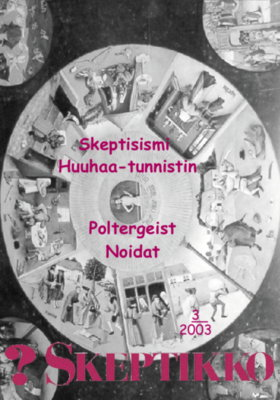
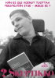
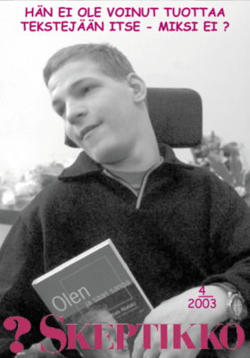

Skeptikko-lehti 2003
Ellei sinulla jo ole tietokoneellasi pdf-muodossa olevan tiedoston lukemiseen tarvittavaa
Acrobat Reader -ohjelmaa, saat sen ladattua maksutta tästä kuvakkeesta:

Skeptikko on Skepsis ry:n neljä kertaa vuodessa ilmestyvä jäsenlehti. Tästä verkkoversiosta löydät lehtien sisällysluettelon, yksittäisiä artikkeleita html-muodossa sekä kokonaiset lehdet pdf-muodossa.
 Skeptikko 1/2003
- Risto K. Järvinen: Pääkirjoitus. Malttia ”käännytys”työhön
- Peter Greasley: Myönteisten ja kieltävien vastauksien hallinta spiritistisessä meedioistunnossa
- Timo Joutsivuo: Madeiratynnyrissä ikuiseen elämään ynnä muita keinoja elämän pidentämiseksi
- 12 keinoa täyttää maailma skeptikoilla
- Risto K. Järvinen: Skepsis mukana tieteiden yössä
- Langettavia päätöksiä luontaistuotteiden piilomainonnasta
- Laihdutuslimbo kirjalle ”Syö oikein oman tyyppisi mukaan”
- Veijo Saano: Uskomushoidot eivät tehonneet – Barry Sheenin tapaus
- Bara Normal: Meteoriittidirektiiviä odotellessa
- Jussi Niemelä: Keskustelua. Povaamisesta, uskonnosta ja pelottelusta
- S. Albert Kivinen: Keskustelua. Metsään mentiin
- Atle Weintraub: Keskustelua. Juutalaisen skeptikon näkemys ympärileikkaukseen
  Skeptikko 2/2003
- Risto K. Järvinen: Pääkirjoitus. Kuka ryhtyisi töihin?
- Kevin Christopher: Atlantis – ei ikinä, ei kuinkaan, ei missään
- Lisäaineiden haittavaikutuksista liikkeellä vääriä väitteitä
- Veikko Näntö: Kahakka Noni-mehusta päättyi
- Kalevi Kuitunen: Kun Skepsistä perustettiin
- Richard Dawkins: Keskeneräiseksi jäänyt keskustelu raskaan sarjan darwinistin kanssa
- Risto K. Järvinen: Lupauksia ja uhkailua… Maria Duvalin moraalittomat kirjeet, osa I
- Ravintouutisia
- Luontaistuotteita pannaan
- Jukka Häkkinen: Hypnoosi voi lievittää kivun kokemusta – rajallisesti
- Jukka Häkkinen: Kreationistit haastoivat biologian professorin oikeuteen
- Risto K. Järvinen: Raamattukoodi ”tietää” jälleen
  Skeptikko 3/2003
- Nils Mustelin: Pääkirjoitus. Planeetat, horoskoopit ja taikausko
- Kuinka tunnistat huuhaan, käännös: Pertti Laine
- Jukka Häkkinen: Puheenjohtajan palsta. Skepsiksen tehtävät
- Kari Lagerspetz: Onko biologiassa suuria lukuja?
- Risto K. Järvinen: Olemmeko vai emme – siinäpä skeptinen kysymys
- Risto Selin: Mikä ihmeen skeptisismi?
- Petteri Arola: Determinismi ja vapaa tahto
- Pasi Klemettinen: Poltergeist-perinteen tarkastelua
- Jari Eilola: Naiset ja ”Huoneentaulun” maailma. Noituus, taikuus ja noitavainot
- Ravintouutisia
- Bara Normal: Skeptikkojen ihmeellinen luonto
- Ali Heikkilä: Majesteetti Kuoleman kanssa ei järjellä pärjää
- Huuhaa-palkinto teki tehtävänsä?
- Pete Pakarinen: Parapsykologian professuuri Lundin yliopistoon
Lehti on postitettu tilaajien lisäksi yli 400:lle Filosofian ja elämänkatsomustiedon opettajalle.
  Skeptikko 4/2003
Kaikkien artikkelien © Copyright 2003 Skeptikko-lehti ja kirjoittaja.
Kirjoitukset vapaasti siteerattavissa ja levitettävissä ei-kaupallisiin tarkoituksiin, lähteeksi mainittava kirjoittajan lisäksi Skeptikko-lehti numeroineen.


{kind=link}
{kind=link}
{kind=link}
{kind=link}